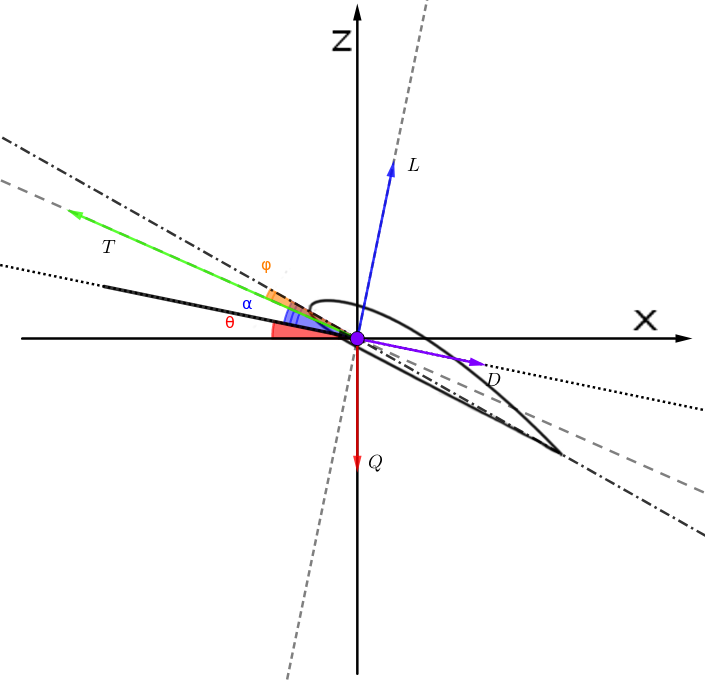

Aircraft performance method
Aricraft Performance Method is used when we want to know what combination of velocity and thrust setting will allow an aircraft to climb to cruise altitude and how fast.
The climb angle \(\theta\) is the angle between horizontal and the wind X-axis. Angle of attack \(\alpha\) is the angle between chord line of an airfoil and the vector representing the relative motion between the body and the fluid through which it is moving. For most aircraft the thrust axis has little incidence with respect to wind axis under most flight conditions. This angle is denoted by Greek letter \(\varphi\).
Summing forces in the Xs and Zs directions yields Equations: \[ - T cos(\theta+\alpha - \phi) + L sin(\theta) + D cos (\theta) = 0 \] \[ T sin(\theta + \alpha - \phi) + L cos(\theta) - D sin(\theta) - Q = 0 \] Lift \[ L = {1 \over 2} \rho S C_L V^2 \] Drag \[ D = {1 \over 2} \rho S C_D V^2 \] Thrust \[ T = {N_r \over V} \] Lift & Drag coeficients \[ C_L = a(\alpha - \alpha_0) \] \[ C_D = C_{D min} + A C_L^2 \] where A can be described as \[ A = {1 \over {\pi \Lambda_e}} \] Slope of the lift curve \[ a = {dC_L \over d\alpha} \] Weight \[ Q = mg \] Advance ratio \[ J = { V \over {n_s D}} \] International Standard Atmosphere air density \[ \rho = 1.2255 (1 -{ {H} \over {44300}})^{4.256} \] We can write the equation as: \[ - {N_r \over V} cos(\theta+\alpha - \phi) + {1 \over 2} \rho S C_L V^2 sin(\theta) + {1 \over 2} \rho S C_D V^2 cos (\theta) = 0 \] \[ {N_r \over V} sin(\theta + \alpha - \phi) + {1 \over 2} \rho S C_L V^2 cos(\theta) - {1 \over 2} \rho S C_D V^2 sin(\theta) - mg = 0 \]
Code in R
# x[1] - th # x[2] - alp root.stat <- function(rss){ # International Standard Atmosphere air density atm.rho <- function(H, rho0 = 1.2255){ rho0 * (1 - H/44300 )^4.256 } calulate.roots <- function(height, ALPHA = TRUE){ rho <- atm.rho(height) value.v.min <- function(rho, Cz.max = 1.8) sqrt((2 * rss$m * rss$g)/(rho * rss$S * Cz.max)) V.new <- seq(from = value.v.min(rho), to = rss$VMAX, length.out = 40) df.model <- function( v ){ Nrt <- spline(data.frame(jj = J, nn = mat[, (height + 10 )/10 + 1]), xout = J.new, method = "fmm") r.df <- data.frame(ps = 10^3*Nrt$y/v, as = 0.5 * rho * rss$S * v^2, nrt = Nrt$y, vv = v, jj = v/(prop.char$NS*prop.char$D) ) } # Lift Coeficient Cz <- function(alpha) rss$a*(alpha - rss$ALPHA0) # Drag Coeficient Cx <- function(alpha) rss$Cx0 + ((Cz(alpha))^2 )/(rss$Le * pi) # Model for solving non-linear equation in.model <- function(r){ model <- function(x) c(F1 = -r[1] * cos(x[1] + x[2] - fi) + r[2] * (Cz(x[2]) * sin(x[1]) + Cx(x[2]) * cos(x[1])), F2 = r[1] * sin(x[1] + x[2] - fi) + r[2] * (Cz(x[2]) * cos(x[1]) - Cx(x[2]) * sin(x[1])) - m*g) ss <- multiroot(f = model, start = c(0, 0), positive = TRUE, maxiter = 10000) ss$root } resdf <- apply(df.model(V.new), 1, in.model) rrr.df <- data.frame(t(resdf), vv = V.new) %>% filter(X1 > 0) if(length(t(rrr.df)) == 0){ return(rr.df) } V.new <- seq(from = value.v.min(rho), to = max(rrr.df$vv), length.out = 40) resdf <- apply(df.model(V.new), 1, in.model) return.df <- data.frame(df.model(V.new), theta = t(resdf)[ ,1], alpha = t(resdf)[ ,2], w = V.new * sin (t(resdf)[ ,1])) } }